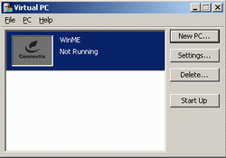
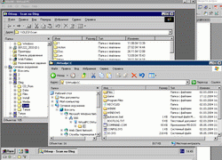
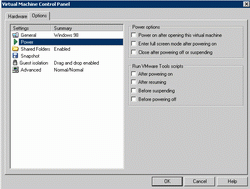
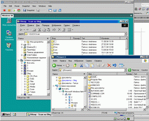
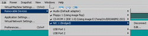

Цель данной статьи рассмотреть 2 варианта установки нескольких ОС на 1 машине (только на одной, при наличии денег, можно купить несколько компов и поставить на каждый свою ОСь).
Зачем ??? Спросите Вы, но на этот вопрос должен отвечать не я, а ВЫ!!! Мы рассмотрим, только организацию нескольких ОС и различия методов установки.
Каждый из этих двух вариантов имеет преимущества и недостатки, рассмотрим их подробнее.
С одной стороны, все очень просто: устанавливаем ОС, перегружаемся, загружаемся с загрузочного диска (или дискеты), устанавливаем ОС, перегружаемся ...... и так повторяем столько раз, сколько нам нужно операционок. Но эта простота может оказаться очень опасной, одно неверное движение и можно потерять все данные, поэтому:
!!! ПРЕЖДЕ ЧЕМ ДЕЛАТЬ ЭТО, СДЕЛАЙТЕ РЕЗЕРВНУЮ КОПИЮ !!!
Ну все, уже нормально напугал, теперь перейдем к самому процессу.
Теперь более подробно рассмотрим каждый пункт.
Для начала нужно проверить BIOS, если есть защита boot-сектора, нужно отключить.
Разбивка диска: желательна (для некоторых систем просто необходима). Для разбивки лучше использовать специальные утилиты (я предпочитаю Partition magic 7 или 8 версию). Разбивать желательно для каждой ОС свой раздел + раздел для данных. Некоторые загрузчики разрешают устанавливать несколько ОС в один раздел (при загрузке они подменяют системные папки), но все же лучше для каждой ОС свой диск. Более надежно, меньше влияние одной ОС на другую и убивать намного легче - форматнул винт и как и не было. Желательно работать с программой стороннего производителя, она видит информацию о многих разделах и показывает какая система установлена на каком разделе.
Примечание. Очень распространенная ошибка при использовании встроенных утилит работы с дисками: Если одна ОС не видит файловую систему другой ОС она предложит отформатировать "неразмеченную" область. Другая распространенная ошибка, связана с подменой дисков, допустим у нас есть:
C:\ - NTFS (установлена ХР); D:\ - FAT32 (диск с данными); E:\ - Ext (Linux); F:\ -FAT32 (диск с данными).
И в один прекрасный день вы решили, что ХР вам уже не нужна (или хотите ее переустановить). Вы загружаетесь с загрузочной дискеты, format C:, теперь вы перегружаетесь и очень сильно удивляетесь!!! Загружается ХР!!! А что же я только что форматировал, спросите вы. А форматировали мы диск D:\, т.к. старые утилиты не видят разделов отличных от FAT (NTFS, Ext, ...), когда мы форматировали команда format видела только 2 диска D:\ - FAT32, который стал С:\ и F:\ -FAT32, который стал D:\.
Нужно быть очень осторожным и внимательным, также желательно использовать программы, которые предназначены для работы с дисками.
Установка ОС. все понятно ставим ОС, дрова, ..... (если есть защита boot-сектора, нужно отключить)
Установка загрузчика. этот пункт желателен, но не обязателен, каждая современная ОС имеет встроенный загрузчик, LILO для Unix-систем или встроенные в ОС, как в ХР (отключается: Мой компьютер -> Свойства -> Дополнительно -> Загрузка и восстановление). Почему я рекомендую установку именно загрузчика от стороннего производителя: они более функциональные (часто в них встроены утилиты администрирования и обслуживания ПК), имеют средства разделения загрузочных/системных файлов каждой ОС, легко восстанавливается загрузочная область и много других полезных мелочей.
Обновление загрузчика. После установки новой ОС, она обычно затирает boot-сектор или устанавливает свой загрузчик, правда действует это не всегда, только если обнаруживается предыдущая версия ОС, например, если нужно две ОС: 98 + ХР, сначала нужно устанавливать Windows98, а потом WindowsХР (только в этом порядке, если сделать наоборот, то Windows98 затрет загрузку ХР) после установки поставит свой загрузчик (вполне функциональный, как для этих двух ОС). В случае других ОС (я рекомендую и для этого варианта тоже) необходимо обновить загрузчик. Как его обновить зависит от конкретной программы. Некоторые программы надо проинсталлировать еще раз, некоторые после установки (после п.3) предлагают сделать загрузочную дискету, для обновления нужно загрузиться с этой дискеты, есть еще один вариант, в папке загрузчика есть файл, которые обновляет загрузку (для Acronis OS selector, reinstall.com).
При установке ОС нужно быть очень осторожным, внимательно читать, что пишут программы и отвечать на их запросы только после того, как хорошо подумать. Не один десяток гигабайт информации потеряно.
Преимущества и недостатки этого метода после рассмотрения второго метода, т.к. недостатки одно, плавно перетекают в преимущества другого.
Прежде чем устанавливать ОС установить программу, которая будет эмулировать компьютер со всеми внутренними компонентами. Есть несколько программ подобной специализации: Connectix Virtual PC, VMware, Bochs (последнюю программу мы не будем рассматривать, т.к. она более сложная при работе и менее функциональна). После установки программы создания виртуальной машины можно переходить собственно к теме нашего разговора.
Если необходимо несколько ОС, повторяем п.1 и п.2 нужное количество раз.
Каждая ОС имеет свои диски, которые представлены файлами на реальной машине и никак не пересекаются (если их не подключать к разным виртуальным машинам).
Более подробное рассмотрение этого способа будет ниже.
Скорость работы. Конечно же скорость выше при нормальной установке ОС. При использовании виртуальных машин, скорость будет ниже, т.к блоки реальной машины эмулируются - эта нагрузка ложится на центральный процессор, помимо обработки самих задач. Скорость работы машины различна для программ Connectix Virtual PC и VMware Workstation, также на скорость влияет объем выделенной реальной памяти для виртуальной машины.
Риск потери данных. При работе с виртуальной машиной потерять данные (с винчестера) практически не возможно. Доступ к обычным разделам осуществляется как к сетевому ресурсу (можно убрать доступ или открыть только для чтения).
Совсем другая ситуация при поочередной установке систем. Здесь данные можно потерять даже до того, как установится вторая ОС (см. примечание к разбивке диска). После установки ОС потеря данных также актуальна, как и до установки. Доступ к дискам может быть прямой (диски Windows 98/Ме видно в ХР), при этом любое программное обеспечение (которое вы, например, тестируете) может запортить информацию. Также ОС может обнаружить "неразмеченную" область и предложить ее отформатировать или в случае использования систем Unix, можно некорректно монтировать диск. Защита информации полностью лежит на пользователе.
Недоступность данных. Опять лучше создание виртуальной машины: какие бы ОС не были установлены, можно получить доступ к любым данным, или подключить диск, или сделать как сетевой ресурс. Намного сложнее при поочередной установке ОС, здесь что бы получить доступ нужно пользоваться сторонними утилитами, которые работают не всегда корректно и не на каждый раздел можно подключить. Например, при работе в Windows 9х доступ к разделам NTFS, Ext и другим осуществляются с помощью сторонних утилит (по поводу доступа к NTFS у меня были проблемы с "читаемостью" русских названий файлов, записи на этот диск, и доступ к некоторым файлам).
Переход из одной системы в другую. В случае поочередной установки необходима перегрузка системы, работа в нескольких системах одновременно исключена. Для виртуальной машины, переход осуществляется запуском нужной ОС. При этом новая ОС запускается в отдельном окне и сохраняется полная работоспособность текущей ОС. Количество запущенных ОС ограничено скоростью процессора и объемом памяти. Запуск и загрузка системы необязательны, если предварительно виртуальную ОС усыпить (или сохранить) - доступ, в этом случае, мы получаем через несколько секунд.
Поддержка оборудования. Виртуальная машина заменяет некоторые реальные компоненты на свои (мышь, видеокарта, ...), поэтому тестирование некоторых элементов становится не возможным. Для поочередной установки под каждую ОС нужно устанавливать свои драйвера, поддержка железа полная, т.к. работает только одна система: при корректной установке конфликтов быть не может.
Объем инсталляции - 22,4 Мб.
Установка ни чем не примечательна, поэтому ее описание пропустим (перегрузка не нужна).
Запускаем. Автоматически программа запускает мастер создания виртуальной машины.
В первом диалоговом окне нужно ввести имя виртуальной машины, далее нас спрашивают, как создавать машину: автоматически (профиль по умолчанию) или с помощью мастера (пошагово, с изменением параметров). Я выбираю всегда пошагово, во-первых интересно, что я делаю, во-вторых, это не сложно. Далее нас спрашивают: какую из ОС мы планируем установить и предлагается список (линейка микрософта от DOS до Win2003 server, а также: Linux, BSD, OS/2, NetWare, Solaris и другие), это нужно для установки драйверов системы в нашу виртуальную машину. Следующий шаг, выбор объема оперативной памяти (программа предлагает оптимальное значение, но его можно изменить). Далее выбор диска (винчестера) и два варианта: выбрать существующий или создать новый (при создании нового объем указывать не нужно, он будет динамическим). Все, жмем финиш и попадаем в окно программы Connectix Virtual PC.

Если мы нажмем "старт"...., то увидим "OS not found", чего и следовало ожидать, ведь мы создали только железо + BIOS. Следующий шаг - установка операционки, описывать его не буду, т.к. он темы не касается.
Для дальнейшего рассмотрения я буду использовать Win98 на виртуальной машине и WinХР на реальной.
После установки ОС нужно зайти в меню РС -> Install/Update additions. Это набор драйверов и дополнений, содержащий, например, драйвера материнской платы, сетевого адаптера, монитора. Также после установки этих дополнений переход мышки между виртуальной и реальной машиной будет происходить "естественно" (до этого виртуальная машина полностью захватывала управление мышей и чтобы перейти в реальную машину, нужно было нажимать правый Alt).
Делаем сеть, между нашими машинами (подразумевается, что Install/Update additions установлен, все драйвера на реальной, виртуальной машине установлены, наличие сетевой платы не обязательно). Сеть можно организовать "стандартно" или через мост.

Сеть есть, ура!!! Смотрим скиншот: открыт проводник (Win98), показывающий сетевой ресурс //Oleg/Scan (под WindowsXP), сверху расположен другой проводник (WinXP), в котором показан сетевой ресурс //VirtualPC/C (под Windows 98). Сетевые протоколы устанавливаются и настраиваются стандартно, доступ есть как из виртуальной, так и реальных машин (можно "залезть" на виртуальную машину с любой сетевой), также можно сделать Интернет на виртуальную машину.
Рассмотрим другие возможности программы Connectix Virtual PC.
При переключении (Alt+Tab) на задачу реальной машины происходит перераспределение процессорного времени (виртуальная машина работает как фоновая задача). Также можно приостановить (пауза) или "усыпить" (спящий режим - в исполнении Virtual PC). Нажатие Reset/Power (системного блока) имитируются из меню или горячей клавишей.
СD-ROM/Floppy диск имитируются образом диска или происходит захват реального железа (можно менять при запущенной виртуальной ОС).

Объем инсталляции - 21,2 Мб.
После установки, нужно перегрузиться, т.к. в систему прописываются несколько системных служб. После перезагрузки в папке Панель управления -> Сетевые подключения, у нас есть два новых сетевых подключения (и настроенных!!!) - они необходимы для функционирования сети между виртуальной и реальной машиной.
Запускаем приложение. Далее запускаем мастер (все аналогично предыдущей программе), выбираем, какая ОС будет установлена, объем памяти (размер сильно влияет на быстродействие, выяснилось опытным путем, спасибо Timur), создаем новый диск (динамический), выбираем способ подключения к сети (можно оставить, через внутренний мост), нажимаем готово.
Окно разделено на две части (Favorites не рассматриваем, это перечень машин): вверху параметры виртуальной машины снизу, скриншот экрана виртуальной машины (если она усыплена или приостановлена).
Для дальнейшего рассмотрения я буду использовать Win98 на виртуальной машине и WinХР на реальной.

Настройка сети происходит аналогично Connectix Virtual PC.
Сеть может быть организована несколькими способами:
обычная; мост (реализуется протоколами VMware, проще настроить), виртуальная сеть (реализуется протоколами VMware, можно организовать 10 виртуальных сетей, после инсталляции программа автоматически ставит 2).
Меню File.
Кроме привычных пунктов, для пользователей Windows, (создать, открыть, закрыть, выход) есть несколько новых. Один из них - инсталляция дополнений в виртуальную машину, другой - сохранение скриншота экрана (Capture screen...) в BMP файл.
Меню Edit.

Removable Devices... - включить/отключить/настроить устройства виртуального компьютера. Также можно указать, какие устройства подключены к каким USB портам.
Application Settings... - изменения лимита памяти, приоритета процесса. Включение административных установок, блокирование под пароль: запуск машины, изменение конфигурации, редактирование сети.
Virtual Network Settings... - редактирование/запуск/остановка сетевых протоколов и сетевых устройств.
Preferences... - параметры программы при взаимодействии с реальной машиной. Захват клавиатуры/мыши/курсора, работа с буфером обмена. Назначение горячих клавиш, место сохранения рабочих параметров.
Меню Power.
Имитирует кнопки расположенные на системном блоке (сброс, включение питания) и Ctrl+Alt+Del.
Меню SnapShot.
Save SnapShot - сохранить текущее состояние (все настройки, запущенные приложения, диски) на жесткий диск.
Revert SnapShot - вернутся к ранее сохраненному состоянию (если оно есть, иначе пункт заблокирован)
Remove SnapShot - удалить сохраненные ранее состояния. Для экономии места на винчестере, для примера копия 375 Мб (только установлена винда 98) и текущее состояние 5Мб.
Меню View/Window/Help. Стандартые меню программ под Windows.
Скажу сразу это не последняя версия, есть и более новые (например, 8). Но всё описание касается именно 5 версии, потому что я работаю с этой программой около 2х лет и за это время она работала «без глюков» и меня полностью устраивает.
Что собой она представляет:
у меня это папка с 3 файлами (2 файла - инструкции, они не обязательны). Основной файл 2288 Кб.
Запускаем установку этой программы. Можно из-под Win95/98/МЕ или DOS-a (не запускается из под WinPE, т.е. полностью 32-х разрядной системы). Не пробовал 2000/ХР/2003.
Кто хорошо знает английский, можно почитать, что люди пишут в первых 4 окошках (тут кратко о возможностях (скришнот), права на программу, условия использования, ... как обычно). Далее предлагают выбрать (скришнот) один из трех вариантов (4-неактивный, ограниченная лицензия, мне и этого хватило :-) ):
Начну с конца, п.3 – создание дискеты с ASPLinux. Результат это получение загрузочной дискеты с функциональной ОС ASPLinux.
П.2. Результат – загрузочную дискету с программой Acronis OS Selector, которой можно восстановить загрузочную область (например, после установки новой ОС, т.к. она затрет загрузку), кроме того, доступны все функции установленной Acronis OS Selector (см. ниже).
Теперь описание п.1 т.е. установки. Первое что спросят – серийный номер (Вы конечно же купили эту программу, поэтому он у Вас есть). Следующее окно – выбор раздела, на который произойдет инсталляция. Следующее окно, Вас опят спросят «Нужно делать загрузочную дискету?» (желательно делать). Позже спросят о желании делать загрузочную дискету с ASPLinux (нестоит). ВСЕ!!!
Результат: у Вас установлен Acronis OS Selector и есть загрузочная дискета (желательно ее делать).
Перегружаем машину (с винчестера).
Запускается Acronis OS Selector, сканирует установленные ОС и добавляет их в меню загрузки (скришнот). Здесь п.1 загрузка ОС (в моем случае WinME), п.2 - ASPLinux, п.3 – загрузка с дискеты.
Рассмотрим меню главного окна: (скришнот).
Configuration -> Boot – загрузка системы на которой установлен курсор (выделенная ОС)
Configuration -> Set as default & boot – определить выделенную систему, как по умолчанию и загрузить ее (при следующей перезагрузки курсор будет указывать на только что выбранную систему)
Configuration -> Edit files – редактирование загрузочных файлов (для МЕ – autoexec.bat и msdos.sys)
Configuration -> Turn off power – выключить компьютер, имитирует нажатие кнопки Рower на системном блоке (для ATX компьютер полностью отключается).
Меню Tool:
Tool -> Setup
Tool -> Disk Administrator
Рассмотрим по порядку Tool -> Setup – это подпрограмма настройки оболочки. Можно настроить внешний вид и параметры главного окна (скришнот).
Здесь много настроек, поэтому я остановлюсь на наиболее интересных.
Сonfiguration -> Properties... (скришнот). На этой странице свойств можно выбрать значок, цвет, ввести название ОС, отредактировать файлы загрузки (добавить файлы в список). На последней вкладке можно ввести пароль для загрузки этой ОС.
В меню View, можно выбрать «шкуру» главного окна, переключиться в режим отображения разделов, а также настроить дополнительные опции: (скриншот: 1, 8).
На вкладке Standart настраиваем загрузка ОС по умолчанию, я ставлю с задержкой в 1 сек, (With timeout) загрузка происходит через 1 сек. той ОС которая выбрана по умолчанию (если при этом ничего не нажимать и не шевелить мышкой). Также здесь есть проверка на вирусы загрузочной области (я этой функцией не пользовался, у меня эту область сканирует антивирусник+WinХР+ BIOS) и запоминание последней загруженной системы (т.е. она становиться по умолчанию).
На вкладках Display, Boot menu, Input devices – все интуитивно понятно. Здесь можно настроить параметры экрана (если вы заметили, то программа работает в графическом режиме), расположение окон, формат часов и их расположение, размещение некоторых пунктов меню, выбрать порт мыши, статус NumLock при загрузке.
Последняя вкладка Password (скришнот) – здесь вводятся пароль админа (для изменения настроек) и пароль на загрузочное меню.
Для примера немного оформили внешний вид скришнот.
Меню Other.
Вернемся к главному окну и подменю Tool -> Disk Administrator (скришнот)
Это своего рода Partition Magic. Подпрограмма для работы с разделами.
Описывать ничего не буду, все становиться ясно после просмотра скриншотов (1, 2, 3, 4), кому не понятно - !!!тогда лучше в этот раздел не лазит!!! (может привести к потери данных).
В этой подпрограмме есть редактор диска: Disk -> Edit (скриншот: 1, 2) – здесь надо быть !!! В ТРОЙНЕ ОСТОРОЖНЫМ!!! (лучше сюда не лазить).
Сразу скажу что Disk Administrator я не использую, т.к. меня устраивает Partition Magik 7. Функции которые я использовал это было изменение размера кластера, форматирование разделов под Linux (скриншот: 1, 2; форматирование 40 Гб заняло 5 сек)